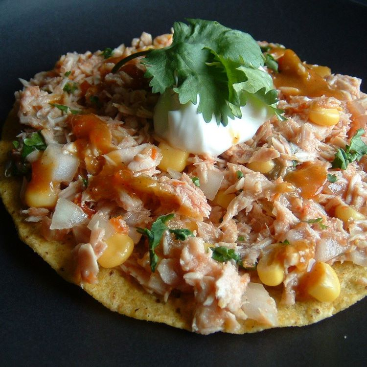

Home
Tuna Tostadas

Description
These refreshing tuna tostadas taste great on a hot summer day! White albacore tuna, onion, and corn are mixed with the flavors of lime, cilantro, and piquant hot sauce. Serve on a tostada or in a taco shell.
Ingredients
- 3 (5 ounce) cans solid white tuna packed in water, drained
- ½ (10 ounce) can sweet corn, drained
- ½ onion, finely chopped
- 1 bunch cilantro, finely chopped
- 2 tablespoons salsa
- 1 lime, juiced
- hot sauce to taste
- salt and pepper to taste
- sour cream, for topping
- 8 tostada shells
Directions
- Place tuna in a bowl and flake with a fork. Stir in corn, onion, cilantro, salsa, and lime juice. Season with a few dashes of hot sauce, and salt and pepper to taste; stir to combine.
- Spoon onto tostada shells. Top each tostada with a dollop of sour cream and a bit more hot sauce.